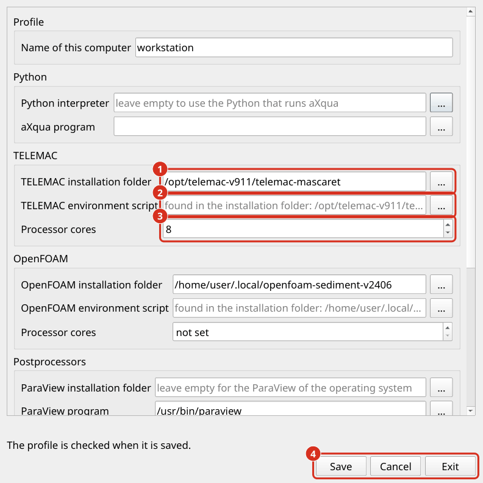

Plugin Setup
Das Plugin-Setup enthält alles, was den Computer beschreibt und nicht das Simulationsprojekt, das heißt, wo Python und die Simulationssoftware installiert sind und wo Simulationen geschrieben werden. Diese Einstellungen werden einmal pro Computer vorgenommen. Sie werden von der Beschreibung eines Flussabschnitts (aXqua Fall Setup) getrennt, so dass ein Fall ohne Änderungen auf einen anderen Computer kopiert werden kann.
Plugin-Profil
Alle Einstellungen eines Computers werden in einer Datei gespeichert, dem Profil. Der Name endet mit .axq-profile. Das Standardprofil ist die Datei default.axq-profile im aXqua Konfigurationsordner des Benutzers (~/.config/axqua/ unter Linux). Jedes Benutzerkonto eines Computers hat sein eigenes Profil.
Im Plugin. Die Registerkarte Configuration zeigt das Profil dieses Computers. Auf einem Computer ohne Profil klicken Sie auf Create profile…: aXqua sucht nach Python, TELEMAC, OpenFOAM, ParaView und VisIt und öffnet den Profileditor mit dem, was er gefunden hat. Mit einem Profil liest die Schaltfläche Edit profile…. Jeder Pfad im Editor hat eine Schaltfläche, die einen Dateidialog öffnet, so dass nichts eingegeben werden muss. Der Editor hat rechts unten drei Schaltflächen:
Save schreibt das Profil und überprüft es. Das Fenster bleibt offen und zeigt an, was der Scheck gefunden hat.
Cancel verwirft die Änderungen seit dem letzten Speichern und schließt das Fenster.
Exit schließt das Fenster und fragt zuerst, ob es Änderungen gibt, die nicht gespeichert wurden.

Die Registerkarte Configuration (1) Das axqua Programm, das das Plugin aufruft, mit Settings…, um es auszuwählen. (2) Das Profil des Computers mit dem, was er für jedes Programm benennt, Edit profile… und Check. (3) Die Box Simulation & postprocessing software: die Installationsassistenten, mit jedem Programm, das in dunkelgrün gefunden wurde; ein Programm, das nicht gefunden wurde, wird in fettem dunkelviolett benannt. (4) Help öffnet die Dokumentation in dem Abschnitt der Registerkarte, der zeigt: eine Kopie, die auf diesem Computer aufgebaut ist, wenn es eine gibt, andernfalls die veröffentlichte Dokumentation, auf Deutsch oder Französisch, wenn QGIS auf eine von ihnen gesetzt ist. Clean Up links entfernt Dateien, die die Fälle nicht mehr benötigen (Freigeben des Scheibenraums).
Jedes Programm hat zwei Zeilen im Editor: seinen Installationsordner und darunter die Datei, die aXqua ausführt. Für TELEMAC und OpenFOAM ist diese Datei das Umgebungsskript (Definieren Sie Solver Bindungen), und für ParaView und VisIt ist es die Programmdatei. Die Auswahl des Installationsordners ist ausreichend: aXqua durchsucht den Ordner und gibt die Datei in der Zeile unten ein, wo sie noch geändert werden kann. Wenn ein Ordner mehrere Umgebungsskripte enthält, listet der Editor sie auf und eines davon muss in der folgenden Zeile ausgewählt werden.


Der Profileditor. (1) Der Installationsordner eines Programms, ausgewählt mit der Schaltfläche daneben. (2) Das Umgebungsskript, hier von aXqua im Installationsordner gefunden. (3) Die Anzahl der Prozessorkerne für eine Simulation. (4) Save, Cancel und Exit.
Ein Programm, das mit einem der Installationsassistenten installiert ist, wird vom Assistenten zusammen mit seinem Installationsordner (Simulationssoftware) in das Profil eingegeben. Der Editor wird für ein Programm benötigt, das mit anderen Mitteln installiert wurde, und für die restlichen Einstellungen.
Der Check verhindert niemals das Sparen. Es markiert jeden Eintrag, der nicht in Ordnung ist, mit einem Dreieck, orange für eine Warnung und dunkelrot für einen Fehler. Ein Klick auf ein Dreieck öffnet die Nachricht mit ihrem Heilmittel und eine Schaltfläche, die diese Dokumentation bei der Erklärung der Nachricht öffnet (Warnmeldungen, Fehlermeldungen). Die Schaltfläche Check auf der Registerkarte Configuration wiederholt den Check jederzeit.
In einem Terminal. Um das Profil zu erstellen, lassen Sie aXqua erkennen, was auf dem Computer installiert ist:
axqua profile init
Der Befehl sucht nach Python, TELEMAC, OpenFOAM, ParaView und VisIt, schreibt das Gefundene in das Standardprofil und druckt den Speicherort der Datei aus. Es überschreibt niemals ein bestehendes Profil. Überprüfen Sie anschließend das Profil:
axqua profile check
Der Check meldet alles, was fehlt oder falsch ist, jedes Element mit der Eingabe des Profils, das es betrifft. Es tritt auch in die Umgebung von TELEMAC und OpenFOAM ein, um zu überprüfen, ob die Codes tatsächlich gestartet werden können, was einige Sekunden dauert. axqua profile show druckt das verwendete Profil aus.
Das Profil ist eine Textdatei im YAML-Format und kann mit einem Texteditor ergänzt werden:
schema_version: 1
name: workstation
python:
executable: /home/user/miniforge3/envs/axqua-env/bin/python
axqua: /home/user/miniforge3/envs/axqua-env/bin/axqua
installations:
telemac: /home/user/opt/telemac-mascaret
openfoam: /usr/lib/openfoam/openfoam2406
visit: /home/user/opt/visit
solvers:
telemac:
setup_script: /home/user/opt/telemac-mascaret/configs/pysource.debian12.sh
mpi_processes: 12
openfoam:
setup_script: /usr/lib/openfoam/openfoam2406/etc/bashrc
mpi_processes: 16
postprocessors:
paraview: /usr/bin/paraview
visit: /home/user/opt/visit/bin/visit
jobs:
root: /scratch/axqua-jobs
display:
min_depth: 0.01
velocity_cap: 5.0
Block |
Inhalt |
|---|---|
|
Der Python-Interpreter, in dem aXqua installiert ist, und das |
|
Der Ordner, in dem jedes Programm auf diesem Computer installiert ist, mit je einem Eintrag für |
|
Eine Bindung pro Simulationscode (Definieren Sie Solver Bindungen). |
|
Die Programme für dreidimensionale Figuren (Postprozessoren). |
|
Wo und wie Simulationen durchgeführt werden (Ausführung des Auftrags). |
|
Zwei Werte für Karten in QGIS. |
Um ein anderes Profil als das Standardprofil zu verwenden, z. B. in einem Rechencluster, setzen Sie die Umgebungsvariable AXQUA_PROFILE auf ihren Pfad oder übergeben Sie --profile <file>, wenn ein Auftrag eingereicht wird.
Updates. Das Profil wird im Konfigurationsordner des Benutzerkontos, außerhalb des Plugins und außerhalb des aXqua-Programms gespeichert. Ein Update oder eine Neuinstallation des Plugins, von aXqua oder von QGIS ändert oder entfernt es daher weder und die neue Version liest das bestehende Profil aus. Das Plugin selbst speichert nur den Pfad des axqua-Programms in den Einstellungen von QGIS, den auch ein Update des Plugins beibehält. Ein Eintrag des Profils, den die installierte Version von aXqua nicht kennt, zum Beispiel weil eine neuere Version es geschrieben hat, bleibt in der Datei und wird als Warnung gemeldet. Ein Profil, das überhaupt nicht gelesen werden kann, wird nie überschrieben: Wenn ein neues Profil an seiner Stelle gespeichert wird, behält aXqua die vorherige Datei im selben Ordner unter einem Namen, der mit .bak endet.
Definieren Sie Solver Bindungen
Eine Bindung von Solver sagt aXqua, wie man Flussabschnitt einen Simulationscode erhält. Der zentrale Eintrag ist setup_script, das Umgebungsskript der Installation (Simulationssoftware). Der Ordner der Installation wird separat unter installations (Plugin-Profil) gespeichert. Wenn ein Profil den Installationsordner eines Codes benennt und kein setup_script, verwendet aXqua das Umgebungsskript, das es im Ordner findet, und die verbleibenden Einträge der Bindung sind wie zuvor optional.
Eingang |
Bedeutung |
|---|---|
|
Das Umgebungsskript des Codes: |
|
Anzahl der Prozessorkerne, die eine Simulation auf diesem Computer verwendet. Ohne diesen Eintrag gilt die Nummer in der Fall-Datei. Verwenden Sie die Anzahl der physischen Kerne, nicht der logischen Kerne. |
|
|
|
Name der Linux-Distribution, nur für |
|
Das Programm, das parallel startet, läuft, wenn es nicht |
Ein Code ohne Bindung kann nicht auf dem Computer verwendet werden. Dies ist kein Fehler: Ein Computer, auf dem nur TELEMAC installiert ist, hat einfach keinen openfoam Eintrag.
Ein Profil hat Vorrang vor Maschineneinstellungen, die eine Fall-Datei möglicherweise noch enthält. Für spezielle Situationen haben drei Quellen Vorrang vor dem Profil: die Umgebungsvariablen AXQUA_TELEMAC_PYSOURCE und AXQUA_OPENFOAM_BASHRC und eine Datei solvers.local.yml neben einer Fall-Datei, die eine weitere Installation für diesen Fall bindet.
Installationen, die mit einer früheren Version von aXqua eingerichtet wurden, funktionieren weiterhin ohne Profil. Ihre Einstellungen in den Dateien solvers.yml und profiles.yml des Konfigurationsordners werden noch gelesen. axqua profile init übernimmt die Bindungen von solvers.yml.
Ausführung des Auftrags
Jede Simulation läuft als job: ein unabhängiger Prozess mit eigenem Ordner, der beim Schließen von QGIS fortgesetzt wird. Zwei Einträge des jobs-Blocks steuern, wie Jobs ausgeführt werden:
rootist der Ordner, in dem die Jobordner erstellt werden. Wählen Sie ein Laufwerk mit genügend freiem Speicherplatz, weil die Ergebnisse einer einzigen Simulation können Flussabschnitt zig Gigabyte. Ohne diesen Eintrag werden Jobs in den aXqua-Datenordner des Benutzers geschrieben.launcherist die Methode, die einen Job von QGIS trennt. Der Standardautowählt eine geeignete Methode für das Betriebssystem aus und muss selten geändert werden.
Batch-processing (Kopflos) beschreibt Jobs im Detail.